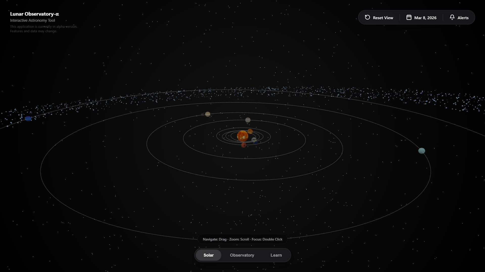
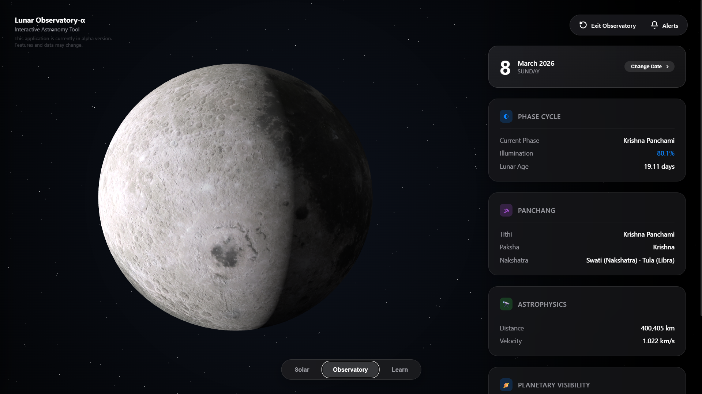
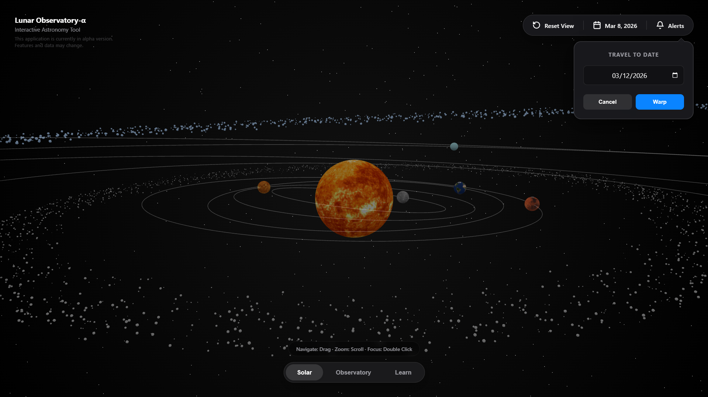
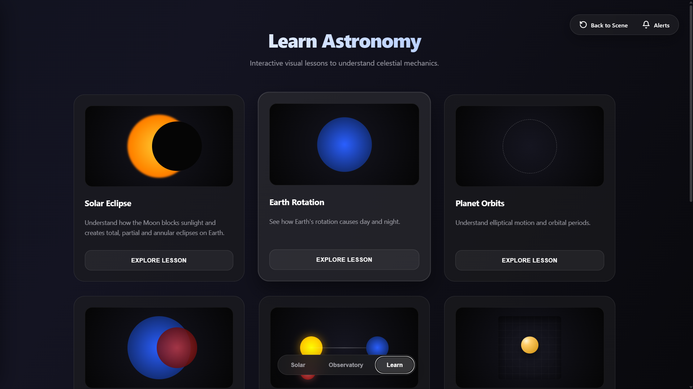

A highly accurate, interactive 3D physics engine and astronomical tracker right in your pocket.
Accurate phase lighting based on real-time astronomical formulas and physical calculations.
Dive into an interactive 3D solar system built on top of a powerful WebGL engine.
Know exactly when and where planets are best visible in the night sky from your location.
Track solar eclipses, supermoons, meteor showers, and major astronomical events.
Receive alerts for lunar phases, planetary visibility, and astronomy events directly on your device. Configure them inside the app settings.
Lunar Observatory transforms complex data into an elegant visual experience. Simulate time, orbit planets, and learn celestial mechanics.

Navigate a fully interactive solar system with precise planetary paths.

Observe realistic lunar textures with physically accurate lighting.

Fast-forward days, months, or years to study complex orbital mechanics.

Educational explanations and guided exploration designed for students.